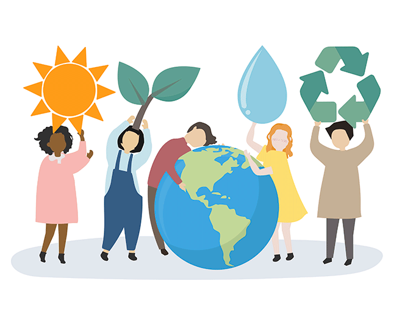
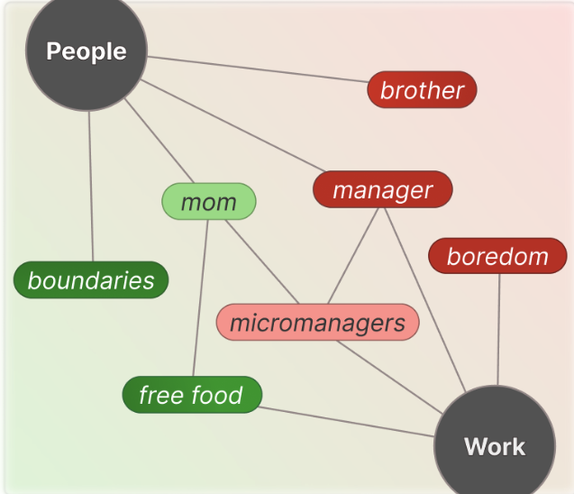

I'm a human-computer interaction researcher and creative technologist. Currently, I study computer science at Stanford University as a coterminal master’s student, focusing on artificial intelligence and human-computer interaction. I’m advised by Prof. Michael Bernstein as part of the Stanford HCI Group, where my research interests include generative agents, multi-agent systems, and LLM value elicitation. This summer, I'm working at Mila and
Montréal HCI, where I'm supervised by
Prof. Ian Arawjo.
Before that, I completed my B.S. in computer science at Stanford with honors. My thesis received a Firestone Medal for Excellence in Undergraduate Research (one of two awarded in the computer science department). I've also worked with the PEACH Lab
at ETH Zürich as a summer research
fellow, hosted by Prof.
April Wang.
I'm excited about:
Updates:
- 06/2026: Graduated from my BS in Stanford with honors and induction into Tau Beta Pi 🎓
- 05/2026: I was 1 of 2 students presented with Stanford's Firestone Medal for Excellence in Undergraduate Research in CS 🎉
- 03/2026: Our paper on LLMs and human values has been accepted at CHI 2026!
- 10/2025: Received a Special Recognition for Outstanding Review for CHI 2026
- 07/2025: Our paper on leveraging pluralistic values for recommender systems was accepted to ICWSM 2026!
- 06/2025: Accepted to the undergraduate honors program at Stanford
- 01/2025: Named a SSR Fellow by the Computer Science Department at ETH Zurich (20/2000+)
- 10/2023: Presented research about Bronze Age archaeology in Anyang, China at SURPS
- 05/2023: Awarded a VPUE Grant to support my research utilizing geospatial data analysis and computer vision for archaeology
Experience
Undergraduate Researcher
Stanford Human-Computer Interaction Group 2024 - PresentResearch Engineer Intern
Stealth Startup 2026Summer Research Fellow
ETH Zürich 2025Editor
Stanford Technology Law Review 2024-2025Data Science Intern
SLAC National Accelerator Laboratory 2023Intern
StartX 2022 - 2023Software Engineering Intern
inlet co. 2021-2022Publications

Climate Twins: Domain-Augmented Generative Agents for Predicting Individual-Level Climate Attitudes
Stanford Undergraduate Honors Thesis in Computer Science, 2026
Firestone Medal
AI and My Values: User Perceptions of LLMs’ Ability to Extract, Embody, and Explain Human Values from Casual Conversations
CHI 2026
Best Paper Honorable MentionToward Risk-Calibrated Standards for LLM-Simulated Participants in Human Subjects Research
CHI 2026 Workshop on Developing Standards and Documentation For LLM Use as Simulated Research Participants
* Equal contribution.
Ongoing Projects
- Interfaces for Agent Swarms of Highly Multi-Agent Systems
- LLM Agent Simulations for Domain-Centered Attitude and Behavior Modeling
- Digital Twins for General Social Contexts